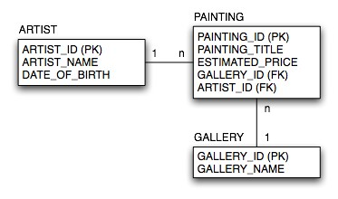
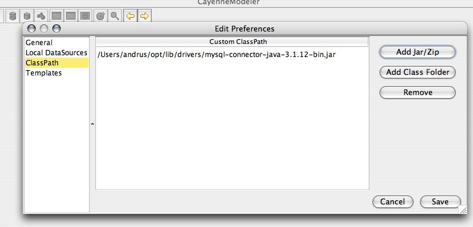
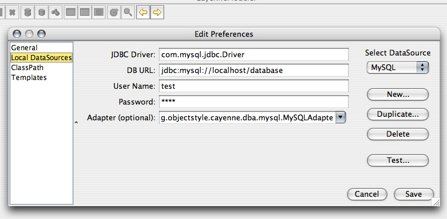

Database schema used in all tutorials in this chapter is shown below:

Before running the tutorials, you will need to go through these steps:
- Install Cayenne. This should be as simple as download and unpack.
- Get access to a relational database. You may want to install a local database to run the tutorials. All the tutorial SQL scripts were tested on MySQL, so installing MySQL should probably be the simplest option. But almost any database should work.
- Install JDBC Driver for the database you are planning to use. Put the driver jars somewhere in the filesystem. You don't have to add them to CLASSPATH for the CayenneModeler to run, however you may need to do that to run your application.
- Start CayenneModeler GUI Application
- Configure Driver Location. In the Modeler go to "Tools > Preferences > ClassPath > Add Jar/Zip" and create an entry or entries for the JDBC driver JAR files installed above. Once these preferences are saved, they will be used by the Modeler, even after it is restarted.

- Configure Preferred DataSources. Go to "Tools > Preferences > Local DataSources > New" and configure a named DataSource for the test database. This step is optional, however performing it now will simplify any database work that you will do when working on tutorials and with your own application.

.